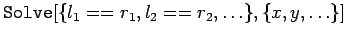
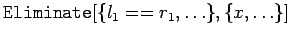
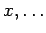
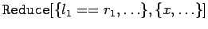

Inhalt Index DeskTop Bronstein

 Computeralgebrasysteme Anwendungen von Computeralgebrasystemen Lösung von Gleichungen und Gleichungssystemen Mathematica
Computeralgebrasysteme Anwendungen von Computeralgebrasystemen Lösung von Gleichungen und Gleichungssystemen Mathematica


Mathematica kann simultan mehrere Gleichungen lösen. Die dafür eingebauten Operationen sind in der folgenden Tabelle dargestellt und betreffen die symbolische, nicht die numerische Lösung von Gleichungssystemen.
|  | löst das gegebene Gleichungssystem nach den Unbekannten auf |
|  | eliminiert die Elemente  aus dem Gleichungssystem |
|  | vereinfacht das Gleichungssystem und liefert alle möglichen Lösungen |
Wie im Falle einer Unbekannten, erhält man mit der Anweisung  eine numerische Lösung. Beispiele für die Lösung von linearen Gleichungssystemen werden im Abschnitt lineare Algebra behandelt.
eine numerische Lösung. Beispiele für die Lösung von linearen Gleichungssystemen werden im Abschnitt lineare Algebra behandelt.